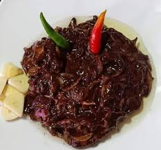

PoneyaygyiRice

Description
Pone yay gyi salad is one of the famous burmese dishes. It is pretty
simple to make.
It is a very popular dish in Burmese teashop and canteens.
Ingredients
- Farmented Black Bean Paste
- Chopped Onion
- Fish Paste (Optional)
- Sunflower Oil
- Salt
Steps
- Add bean paste in the bowl
- Add fish sauce, sunflower oil and salt, one table spoon each
- Add chopped onion
- Mixed them well
- Ready to eat